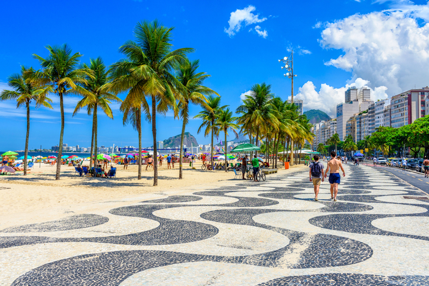
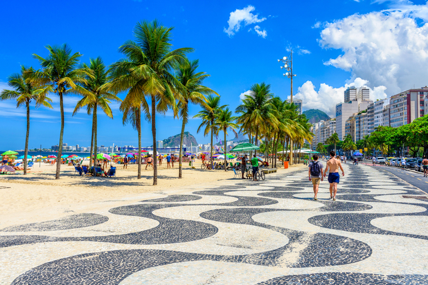
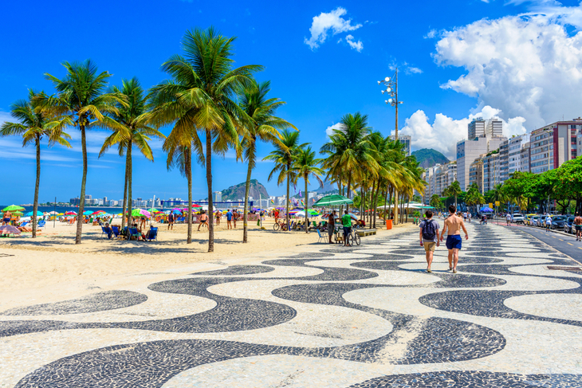
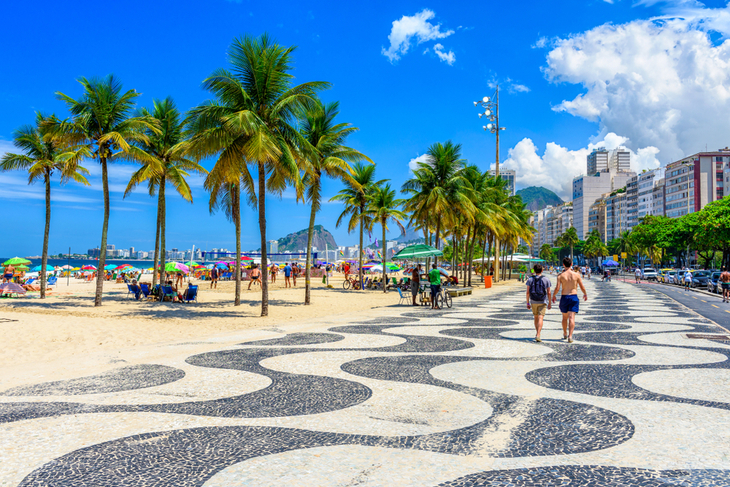

O Rio de Janeiro é famoso por suas paisagens deslumbrantes, incluindo o icônico Pão de Açúcar, o imponente Cristo Redentor no alto do Morro do Corcovado e as belas praias de Copacabana e Ipanema. Além desses pontos turísticos conhecidos mundialmente, a cidade também abriga o Parque Nacional da Tijuca, uma das maiores áreas urbanas de floresta tropical do mundo, oferecendo oportunidades para trilhas, cachoeiras e vistas panorâmicas incríveis.
O Rio de Janeiro é um caldeirão cultural, refletido em sua arquitetura colonial, museus e eventos culturais vibrantes. O centro histórico da cidade, com seus edifícios coloniais bem preservados, como o Paço Imperial e o Teatro Municipal, transporta os visitantes de volta ao passado glorioso da cidade. Além disso, bairros como Santa Teresa e Lapa são conhecidos por sua atmosfera boêmia, com ruas estreitas repletas de bares, restaurantes e música ao vivo. O carnaval do Rio é uma das festas mais famosas do mundo, atraindo milhões de pessoas todos os anos para desfiles de escolas de samba e festas animadas nas ruas.
O estilo de vida descontraído e acolhedor dos cariocas é uma parte essencial da experiência no Rio de Janeiro. Os visitantes podem desfrutar de uma culinária diversificada, que vai desde os tradicionais pratos de feijoada e churrasco até a influência da cozinha internacional. Os quiosques de praia oferecem petiscos deliciosos, enquanto os restaurantes sofisticados proporcionam uma experiência gastronômica refinada. Além disso, o Rio é conhecido por sua vida noturna animada, com uma infinidade de bares e clubes para todos os gostos. A combinação única de beleza natural, rica história cultural e estilo de vida vibrante torna o Rio de Janeiro um destino turístico verdadeiramente inesquecível.